Докладчик
- Извекова Мария Петровна
- студентка 3-го курса
- Российский университет дружбы народов
- 1132226460@pfur.ru
Цель работы
Цель данной лабораторной работы – реализовать модель TCP/AQM с
помощью xcos и OpenModelica.
Задание
- Реализовать в xcos и OpenModelica модель TCP/AQM.
- Построить график, описывающий динамику размера очереди и TCP
окна
- Построить фазовый портрет, описывающий зависимость размера очереди
от TCP окна
Выполнение лабораторной
работы
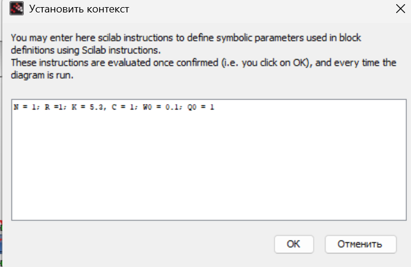
Зафиксируем начальные
значения
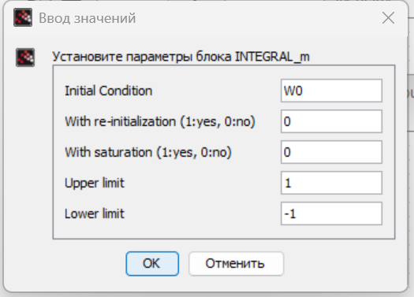
Значение в первом блоке
интегрирования
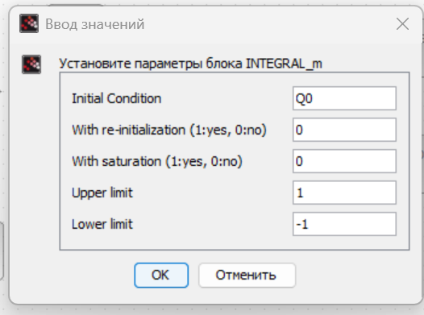
Значение во втором блоке
интегрирования
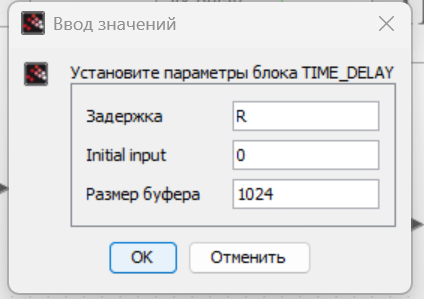
Блок задержки
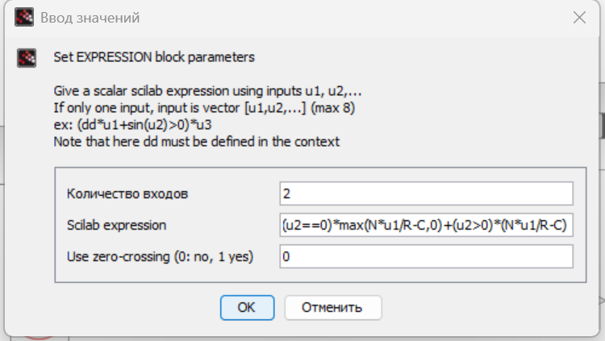
Блок Expression
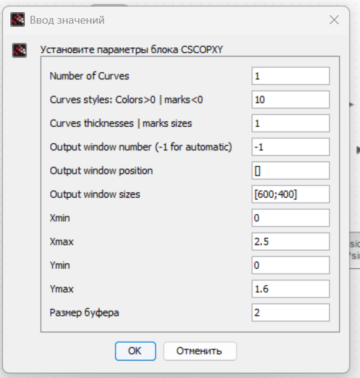
Блок CSCOPXY
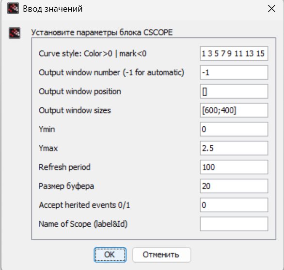
Блок CSCOPE
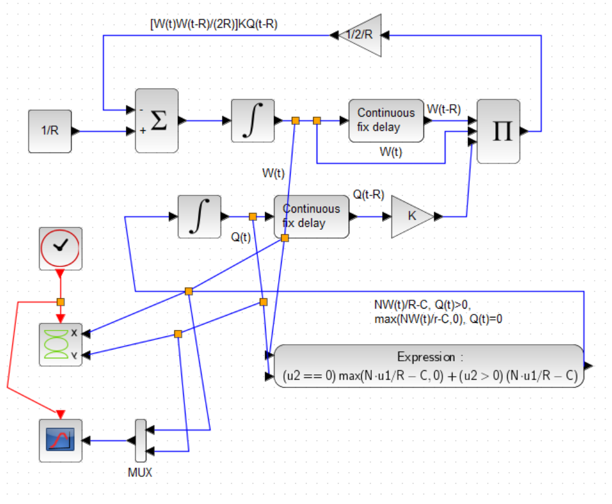
vодель TCP/AQM
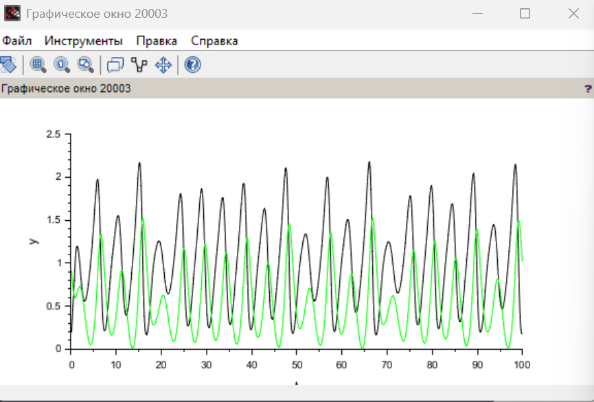
Динамика изменения размепра окна и
очереди
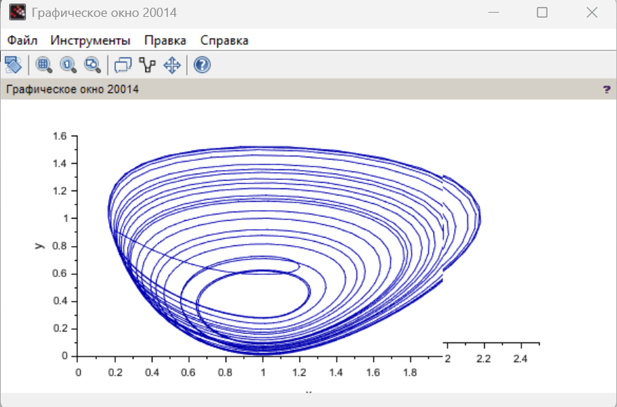
Фазовый портрет
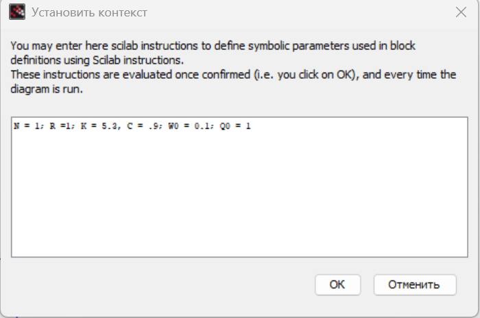
Измененные значения
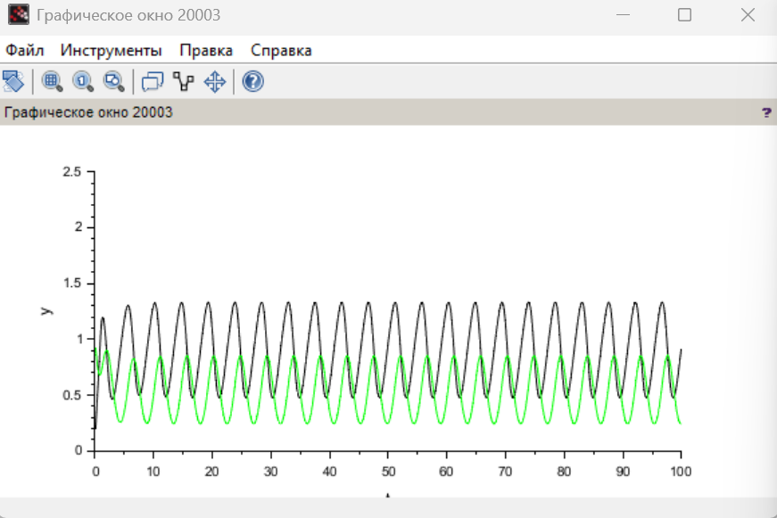
Динамика изменения размепра окна и
очереди
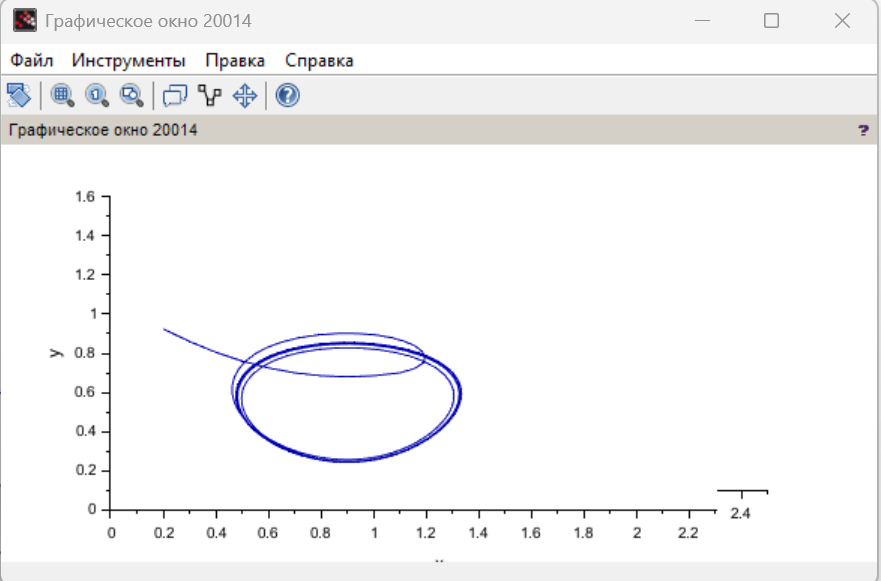
Фазовый портрет
OpenModelica
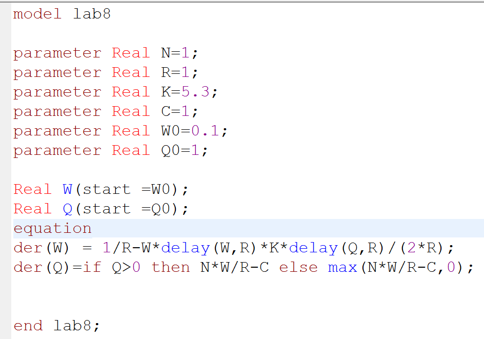
Начальные данные
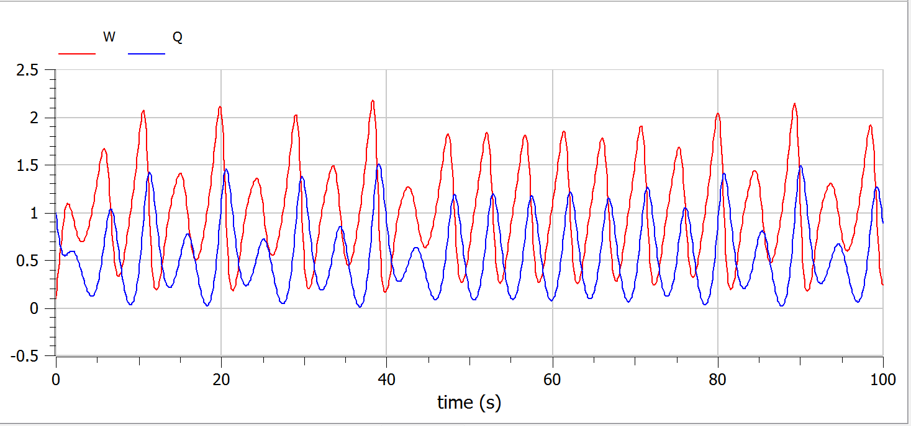
Динамика изменения размепра окна и
очереди
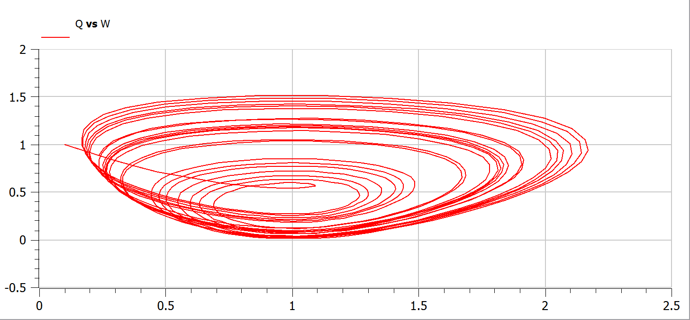
Фазовый портрет
Измененная скорость
обработки пакетов
 Динамика изменения размепра окна и
очереди
Динамика изменения размепра окна и
очереди
 Фазовый портрет
Фазовый портрет
Выводы
При выполнении данной лабораторной работы я реализовала модель
TCP/AQM с помощью xcos и OpenModelica.
Список литературы
- OpenModelica. — URL: https://www.openmodelica.org/.
- Xcos. — URL: https://www.scilab.org/software/xcos.
- Братусь А. С., Новожилов Артем Сергеевич abd Платонов А. П.
Динамические системы и модели биологии. — М. : ФИЗМАТЛИТ, 2010. — 400
с.